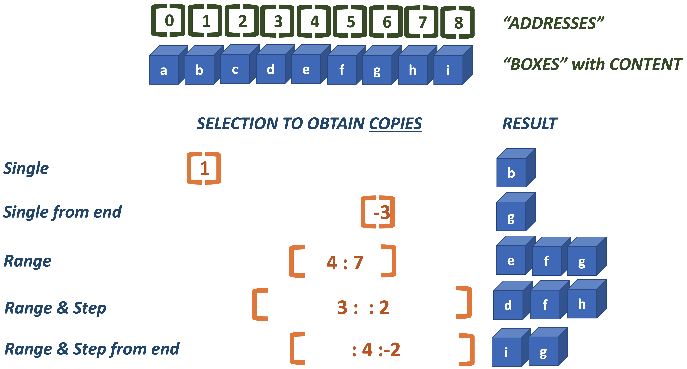
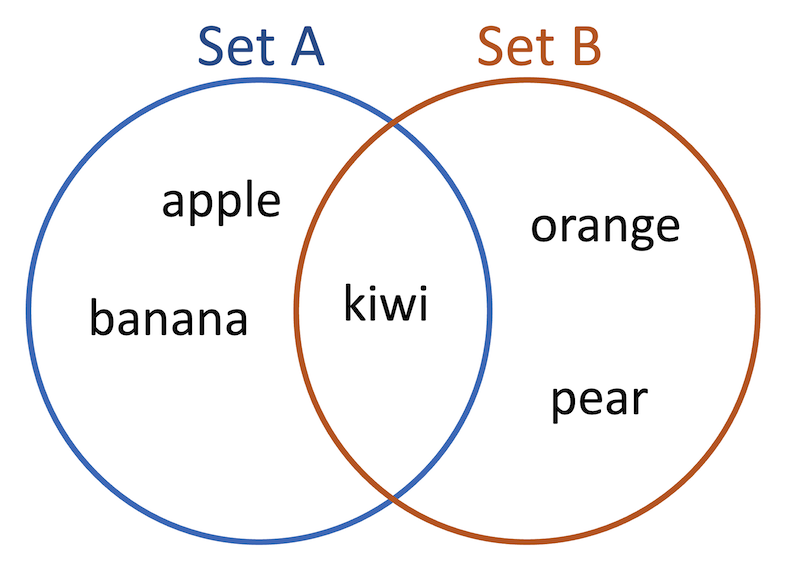
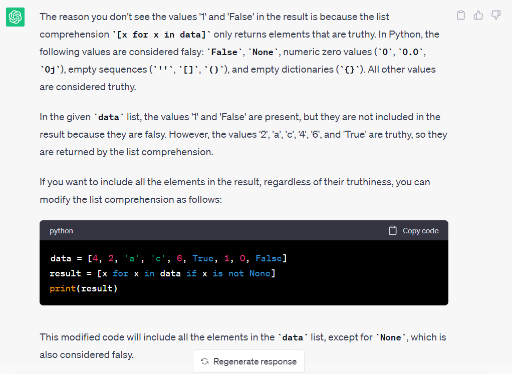

3. It’s all about data#
Without data there is not much computing to be done. All programs take data as input and most of them also generate data as output.
Input can come from a variety of sources: from file, a database, keyboard, a GUI, web socket and output can go to different destinations as well.
There are only a few basic types of data: text and numbers (and booleans). However, data can be aggregated into more complex structures such as collections and objects.
In this chapter we’ll explore the different core data types of Python, both scalar and collection.
3.1. Scalar types#
A scalar data type, or just scalar, is any non-collection value. Put differently, a scalar is a singular value. There are just a few different scalar values in basic Python, and they are the same or at least similar across the vast majority of programming languages.
Numeric types represent numbers and they come in two flavours.
integers have no decimal part (
int) e.g.2,3,140000000198floating point numbers do have a decimal part (
float) e.g.3.211,2.0,5E-5
Text: string data (
str) e.g."It's a wonderful world"or'What a challenge!'Logical: boolean values (
bool) with only two possible values:TrueandFalse
(I skipped binary and complex types for conciseness)
3.1.1. Strings are delimited sequences of characters#
The str type holds text data. When you create a string literal in your code, you will need to indicate where it starts and ends. You do that with quotes, either single (') or double ("). They have to be the same at both ends.
That you have two options is convenient when you have literal quotes in your variable, as in these examples.
text1 = 'The boy said "No man is an island" and the man replied "I am bloody Ibiza!"'
print(text1)
text2 = "The lady's bracelet was lost at sea."
print(text2)
The boy said "No man is an island" and the man replied "I am bloody Ibiza!"
The lady's bracelet was lost at sea.
3.1.2. Types and conversions#
Since Python is a dynamically typed language you do not need to specify its type when creating a variable. However, you can inspect the type by using the type() function on any literal or variable.
print(type(True))
m = "It's a wonderful world" # You can use single quotes in a double-quoted string, but not double quotes (unless escaped)
print(type(m))
print(type(5E5)) #exponents are always floats
<class 'bool'>
<class 'str'>
<class 'float'>
Variables can change type when their value changes:
x = 42
print(f'x is of type {type(x)} and has value {x}')
x = True
print(f'x is of type {type(x)} and has value {x}')
x is of type <class 'int'> and has value 42
x is of type <class 'bool'> and has value True
You can also explicitly change between types, as long as it is a legal conversion.
print(float("42.0")) # OK
#print(int("42.0")) # fails
print(int("42")) # OK
print(bool("42.0")) # OK - any non-empty string is considered True
print(bool("")) # OK - an empty string is False
# print(int("")) # fails
42.0
42
True
False
Data from outside is always string!
When reading from the command-line (terminal) or from file, your data will always be character data, even though they are numeric. You always need to do the conversion yourself, unless you use dedicated libraries for reading from file.
Exercise
Try some conversions yourself.
Figure out why some fail and some do not (sometimes where you expected it),
what the result is and what the logic behind the conversion is.
Especially conversions to bool are interesting and very relevant in
if <condition>: blocks.
3.1.3. Mathematical operators with strings?#
Yes, some math operators work with strings as well, but not all:
print('Hello, ' + 'world!')
print('Hello, ' * 2)
print('Hello' + 2) # One of the most common Python errors
Hello, world!
Hello, Hello,
---------------------------------------------------------------------------
TypeError Traceback (most recent call last)
Cell In[5], line 3
1 print('Hello, ' + 'world!')
2 print('Hello, ' * 2)
----> 3 print('Hello' + 2) # One of the most common Python errors
TypeError: can only concatenate str (not "int") to str
3.2. Collection types#
Collection types, also named Container types, are exactly what their name implies; they are collections of other types (scalar or collection). The number of collection types in the base language is limited, and there are only a few that are used in the majority of cases; these are listed here. A very important aspect of collections is that they are iterable: they can be traversed to inspect or access all individual elements.
Sequence types These all have elements in a specific order and these can be addressed using the position of the element - its index.
list In a list, order matters, and that is why you can fetch elements by their position, starting at zero. Lists can change: you can add and delete elements.
tuple The tuple is much like a list, but with a very important distinction: they are immutable. Once created they can’t change.
range A range is a series of numbers that can be used for iteration of for creating lists or tuples.
(str) Strings behave A LOT like other sequence types!
set A set is a collection of unique elements; no duplicates are allowed.
dict In a dictionary (in other languages map)there are entries where a (key) is coupled to a corresponding value. So that can be retreived by its key.
Below, common aspects of collections are discussed first. These are slicing and accessing methods via the dot operator (object.method()). Some details of individual collection types are discussed in later sections.
3.2.1. Slicing#
A any sequence type can be considered as a street with houses. The house number identifies a house within the street. In Python these addresses start at zero, but unlike house numbers you can also start from the end, with -1:
0 1 2 3 4 5 6 7 A B C D E F G H -8 -7 -6 -5 -4 -3 -2 -1
You can access a single house, a range of houses or in a pattern. All this is done using slicing. Its general syntax is [start:stop:step].
The step is 1 by default and it is not mandatory, and if start or stop is omitted this means “from the beginning (0)” or “to the end”.
Note that stop is NOT inclusive!
Below the different concepts of slicing are demonstrated.

If you try to access an element (character) that does not exist you will get an IndexError.
Here are some code examples using strings. They work the same in lists and tuples as you will discover.
indexing quirks
Python is zero-based which means ‘addresses’ always start at 0.
In series indexing such as in [,] and range(), the ‘to’-part is always exclusive.
So, [1, 3] will select the second and third element!
Here are some indexing examples.
letters = 'ABCDEFGHIJK'
print(f'The character(s) selected by letters[0] are {letters[0]}')
print(f'The character(s) selected by letters[3] are {letters[3]}')
print(f'The character(s) selected by letters[-3] are {letters[-3]}')
print(f'The character(s) selected by letters[2:6] are {letters[2:6]}')
The character(s) selected by letters[0] are A
The character(s) selected by letters[3] are D
The character(s) selected by letters[-3] are I
The character(s) selected by letters[2:6] are CDEF
And here some slicing examples.
letters = 'ABCDEFGHIJK'
print(f'The character(s) selected by letters[::2] are {letters[::2]}')
print(f'The character(s) selected by letters[:] are {letters[:]}')
print(f'The character(s) selected by letters[::-2] are {letters[::-2]}')
print(f'The character(s) selected by letters[:-5:-2] are {letters[:-5:-2]}')
The character(s) selected by letters[::2] are ACEGIK
The character(s) selected by letters[:] are ABCDEFGHIJK
The character(s) selected by letters[::-2] are KIGECA
The character(s) selected by letters[:-5:-2] are KI
As you can see, when the step is negative (last 2 examples), start and stop will be “reversed”.
I personally don’t understand this design decision.
Exercise
Given the string txt = 'aA.bB.cC.dD.eE.fF.gG.hH.zZ', write code using
string slicing to print to screen
"abcdefgz""........""BCDEFGH"'bC.fG.'
txt = 'aA.bB.cC.dD.eE.fF.gG.hH.zZ'
# YOUR CODE
3.2.2. The dot operator works on objects#
So far I have skipped the point that Python is an Object-Oriented programming language.
Being object-oriented means that everything is being modeled as an entity with data and behaviour (e.g. methods) where the objects’ class holds the blueprint for creating objects (instances) according to that blueprint.
Let’s explore this concept with the string type. In Python, strings have only a single property - their character sequence. They do, however, have many methods.
Properties and methods can both be accessed on an object using the dot operator.
The difference lies in the fact that -unlike properties- methods have parentheses after their name that (optionally) define method arguments.
Here are some examples of methods on string objects.
s1 = "Hello"
print(s1.upper()) # every character to uppercase
print(s1.find("ll")) # find('str') gives the index where a given substring occurs (or -1 if not present)
print("Hi I am a programmer".split(" ")) # split on space to get a list of words
print('+'.join("ABC")) # combine individual characters with a separator
print(s1.rjust(10)) # right jusitify at 10 characters
print("foo bar baz".title()) # make all first letters of words uppercase. Alternatively, call on the class itself: str.title("foo bar baz")
HELLO
2
['Hi', 'I', 'am', 'a', 'programmer']
A+B+C
Hello
Foo Bar Baz
Exercise
Given this variable (use your own name!)
name = 'Michiel Noback'
use any combination of find() and slicing to print only your first name.
name = 'Your Name'
# your code
The dot operator works on all objects in Python. Of course, the set of available methods differs from type to type. For instance, a list does not have upper() and string does not have append().
You may be wondering how you can recognize what is an object and what is not?
Well, that one is simple: everything in Python is an object.
Use the function type() to get the object type of any variable or type. There are (of course) a few exceptions: the reserved keywords of the language do not have a type: and, if, not, for, etc; type help("keywords") or see Python keywords. Here are some built-in and custom types.
print(type(42))
print(type(print))
print(type(type))
#define a custom type
class Foo:
pass
print(type(Foo()))
<class 'int'>
<class 'builtin_function_or_method'>
<class 'type'>
<class '__main__.Foo'>
3.2.3. Collection type list: []#
A list is an ordered mutable sequence of elements.
Ordered means that individual elements can be accessed using their index.
Mutable means that lists can be extended, shortened, end elements can be changed (swapped).
As with string objects, slicing is a very important technique for working with them. Accessing elements is done using square brackets [].
Here are a few basic operations with lists.
fruits = ["apple", "orange", "kiwi", "pear"]
fruits += ["banana", "plum"] # extend and overwrite
print(fruits)
fruits[2:5] = [] # delete elements 3 - 5
print(fruits)
fruits[1:1] = ["grapefruit", "strawberry"] # insert new elements
print(fruits)
# fruits[1] = ["grapefruit", "strawberry"] gives an embedded list!
['apple', 'orange', 'kiwi', 'pear', 'banana', 'plum']
['apple', 'orange', 'plum']
['apple', 'grapefruit', 'strawberry', 'orange', 'plum']
Exercise
Given the list below, investigate whether list slicing behaves the same as with strings.
fruits = ["apple", "orange", "kiwi", "pear", "banana", "plum"]
#your code
3.2.3.1. Multidimensional lists#
Since you can put any Python data type in a list, it is possible to create a multidimensional list. When it has two dimensions we also call thiis a matrix.
numbers = [[1, 2], [3, 4], [5, 6]]
numbers[1] # gives [3, 4]
numbers[2][1] # gives [6]
Note that Python has dedicated libraries for working with datastructures of this type: Numpy (number crunching) and Pandas (spreadsheet type data), so if you find yourself really getting into this domain you should really check these out.
3.2.3.2. Methods of type list#
Class list als has an extensive collection of methods to apply to lists. Here are just a few. Also, there is the Python builtin len() that will give you the length of any iterable. Again, this is only a glimpse of what is available. Any operation you can think of with lists is probably already implemented, if not in the core data types then for sure in Numpy of Pandas.
fruits = ["apple", "orange", "kiwi"] # note the square brackets
fruits.append(["banana", "plum"]) # adds an embedded list
fruits.extend(["guava", "cherry"]) # adds each element separately
print(fruits)
print(fruits.pop()) # removes and returns last element
print(len(fruits)) # len() is one of the built-in functions. See chapter on functions for more info
fruits.reverse()
print(fruits)
['apple', 'orange', 'kiwi', ['banana', 'plum'], 'guava', 'cherry']
cherry
5
['guava', ['banana', 'plum'], 'kiwi', 'orange', 'apple']
3.2.4. Collection type tuple: ()#
A tuple is an ordered immutable sequence of elements.
Ordered means that individual elements can be accessed using their index.
Immutable means that tuples cannot be changes once they are created.
As with string and list objects, slicing is a very important technique for working with them as long as they are not mutating operations. Accessing elements is done using square brackets [].
Tuples are often encountered as return value of a method.
Here are a few basic operations with tuples.
animals = ("bear", "horse", "ant") # note the parentheses ()
print(animals[:2]) # OK
animals += ("platypus", ) # surprisingly, OK
#animals += ("platypus") # Gives a TypeError because this is a string surrounded by parentheses
#animals[1:2] = () # TypeError because tuples are immutable
print(animals)
('bear', 'horse')
('bear', 'horse', 'ant', 'platypus')
You may be puzzled by the above snippet. This is allowed:
animals += ("platypus", )
whereas this is not:
animals[1:2] = ()
Type tuple is immutable, but you can create a modified copy, which is exactly what happens in the first example. The second line attempts to delete an element which is not allowed.
It is very informative to visualize this kind of stuff in https://pythontutor.com/
3.2.5. Collection type set: {}#
A set is a collection type that can only hold unique values.
If a value is added that is already present this will have no effect (the value will be ignored).
If you attempt to add a mutable type (an unhashable element) you get a TypeError.
They are quite limited in functionality when comppared to other collection types: they are not sliceable or indexable (using brackets [index] or [from:to]).
Below you see the most-used usage scenarios.
animals = set()
animals.add("deer")
## could also have been created as a literal:
# animals = {'deer'}
animals.add("deer")
animals.add("beetle")
print(animals)
{'beetle', 'deer'}
#animals.add(["gorilla", "horse"]) # TypeError, not immutable/hashable
animals.add(("zebra", "armadillo")) # OK
print(animals)
animals.remove("deer") # remove an element
print(animals)
{'beetle', 'deer', ('zebra', 'armadillo')}
{'beetle', ('zebra', 'armadillo')}
3.2.5.1. Why sets (and dicts)?#
Although any collection in Python supports membership tests, like element in collection, sets have several properties that make them extremely useful.
Sets are guaranteed to have unique elements
Element lookup is extremely efficient: O(1) for sets (and dicts) instead of O(n) for lists
Sets support all operations of set theory (see below)
3.2.6. Set theory operations#
Given the sets depicted here; set A and B:

Where set A contains the elements {'apple', 'banana', 'kiwi'} and
set B contains the elements {'kiwi', 'orange', 'pear'}
the union of two sets is the set of elements that are in A or in B (
A ∪ B)the intersections of two sets is the set of elements that are in A and in B (
A ∩ B)set A and set B are disjoint if they have no elements in common.
set B is a proper subset of A if all elements of B are also in B but
B ≠ Athe symmetric difference is the complement of the intersection
A = {'apple', 'banana', 'kiwi'}
B = {'kiwi', 'orange', 'pear'}
print(A | B) # union, same as A.union(B)
print(A & B) # intersection, same as A.intersection(B)
print(A.isdisjoint(B))
print(A in B) # subset
print(A ^ B) # symmetric difference, same as A.symmetric_difference(B)
{'orange', 'apple', 'banana', 'pear', 'kiwi'}
{'kiwi'}
False
False
{'orange', 'apple', 'banana', 'pear'}
3.2.7. Collection type dict: {}#
The last collection type discussed here is the dict, which is an abbreviation of dictionary.
It is used to hold mappings between keys and values, much like real dictionaries.
A dict can be created as a literal as follows:
fruit_supply = {'apple': 5, 'pear': 2, 'orange': 4}
This says “for key apple the corresponding value is 5”
Like sets, the keys of a dict must be immutable types. There are no restrictions for the values. Also like sets, the keys are always unique. The values, however, may contain duplicates.
Values can be of any data type: numbers, strings, lists, other dicts…
Dicts cannot be sliced, but finding values is done using dictionary[key].
zoo = {'lion' : 'Carl',
'leopard' : ['Sue', "Lilith"],
'rhino' : 'Bobolin'}
print(zoo.get("leopard"))
if (zoo.get('lion')): # workst because get() returns None when key is absent, and None evaulates to False
print('we have lions!')
# better solution
if ('lion' in zoo):
print('we have lions!')
print(zoo['rhino'])
#print(zoo['giraffe']) # gives a KeyError
print(zoo.get('giraffe')) # returns None
['Sue', 'Lilith']
we have lions!
we have lions!
Bobolin
None
Exercise
Now take some time to figure out what the dict methods update() and pop() are
intended for and how they are used. Try them out!
Feel free to try some other methods.
Remember, help(dict) gives you almost all the information you need.
3.2.9. What do I need to memorize?#
Do you need to know all these string methods, and methods from other datatypes?
NO!
You will simply remember the ones you use most without any problem.
For the most part you will need to learn how to quickly find answers to your problems. Here are the resources that are most relevant (in logical order of usage):
Use the dot operator within your editor. This usually suggests possible methods on an object (or class).
use
help()in Jupyter or the Python console, e.g. help(str)Use the python docs, in particular The Python Standard lLibrary
ChatGPT or other LLM (note on next slide)
GIYF (Google Is Your Friend)
Ask a colleague/friend/random tech wizard on the street. Possibly preceeded by asking the debug duck
Also, it may be worth your while to have some cheat sheets copied to your Desktop (fysical or virtual).
Exercise
Use the above (sequence of) resources to find out how to …
print three string variables as one, with a
+between each stringsplit a sentence in a list of separate words
get a random number between 1 and 100
round a number to 2 decimals
3.2.10. Note on ChatGPT#
ChatGPT is a (real) game changer in programming. However, it is never unsure: it does make mistakes, and will serve utter nonsense with utter conviction. Given this snippet and output,
data = [4, 2, 'a', 'c', 6, True, 1, 0, False]
result = {x for x in data}
print(result)
{0, True, 2, 4, 'c', 6, 'a'}
and the question “why do the values 1 and False not appear in this result, it answered this:

3.3. Key concepts#
Important
collection: variable that is composed of multiple values i.e.
list,setetc.class: A blueprint for creating objects of that type. Classes define data and -mainly- behaviour in the form of methods. These methods may be blueprint-scoped (class methods) or instance-scoped (object methods).
immutable: Means that the collection or variable can not change.
keywords: The reserved words of the programming language. These include words like
for,in,notetc.scalar variable consisting of a single value.